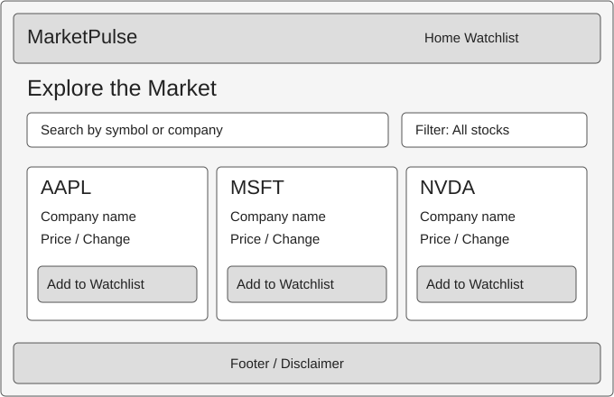
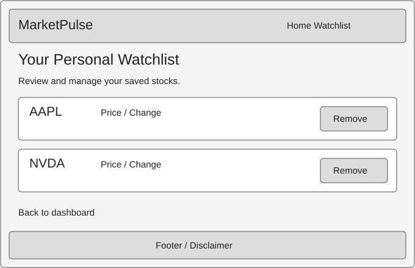

Overview
Purpose
MarketPulse helps beginner traders explore sample stock market data and organize stocks they want to follow. The website provides an easy way to search, filter, and save stocks to a personal watchlist.
Audience
The intended audience is beginner investors, students, and people interested in learning about stocks. They need a simple, mobile-friendly interface that makes it easy to find and track stocks without complicated financial tools.
Dynamic Elements
JavaScript will store sample stock information in an array of objects containing symbols, company names, prices, and percentage changes. Users can search by company or symbol, filter stocks by performance, and add or remove stocks from a watchlist. Event listeners will respond to input changes and button clicks, and functions will update the DOM to display matching stock cards. Conditional statements will handle empty results, duplicate stocks, and positive or negative price changes. The filter, map, and forEach array methods will help process and display data. Local storage will preserve the watchlist between visits.
Pseudocode
- Create an array of stock objects with sample prices and percentage changes.
- Load the saved watchlist from local storage, or initialize an empty array.
- On the dashboard, render stock cards using a renderStocks function.
- Listen for search input and filter changes; filter the array and render matching cards.
- If no stocks match, display a helpful empty-state message.
- When Add to Watchlist is clicked, check whether the symbol already exists. If not, add it and save the updated array to local storage.
- On the watchlist page, render saved stocks using a renderWatchlist function.
- When Remove is clicked, filter out the selected symbol, save the array, and refresh the page content.
Branding
Website Logo
Style Guide
Color Palette
| Primary | Secondary | Accent 1 | Accent 2 |
|---|---|---|---|
| #14283F | #087F5B | #EAF2F8 | #A52A36 |
Typography
Heading font: Arial, sans-serif (bold)
Paragraph font: Georgia, serif
Normal paragraph example
Discover stocks and organize your market research in one place.
Colored paragraph example
Build your watchlist and explore market movements.
Navigation
Content
Home Page
Explore the Market. Discover companies, search by ticker symbol, and compare sample price movements. Use the performance filter to find gainers or decliners. Select Add to Watchlist to save a company for later.
Example cards: AAPL — Apple, MSFT — Microsoft, and NVDA — NVIDIA. Prices and changes will be illustrative, not live quotes.
Watchlist Page
Your Personal Watchlist. Keep the stocks you are interested in together. Review saved symbols, sample prices, and percentage changes. Remove any stock you no longer want to follow. If your watchlist is empty, return to the home page to discover stocks.
MarketPulse is an educational demonstration, not an investment recommendation.
Wireframes
Home Page
The dashboard includes a header, search and filtering controls, stock cards, and a footer. Cards stack vertically on smaller screens.

Watchlist Page
The watchlist displays saved stocks and remove buttons. On mobile, saved stocks appear in stacked cards.
